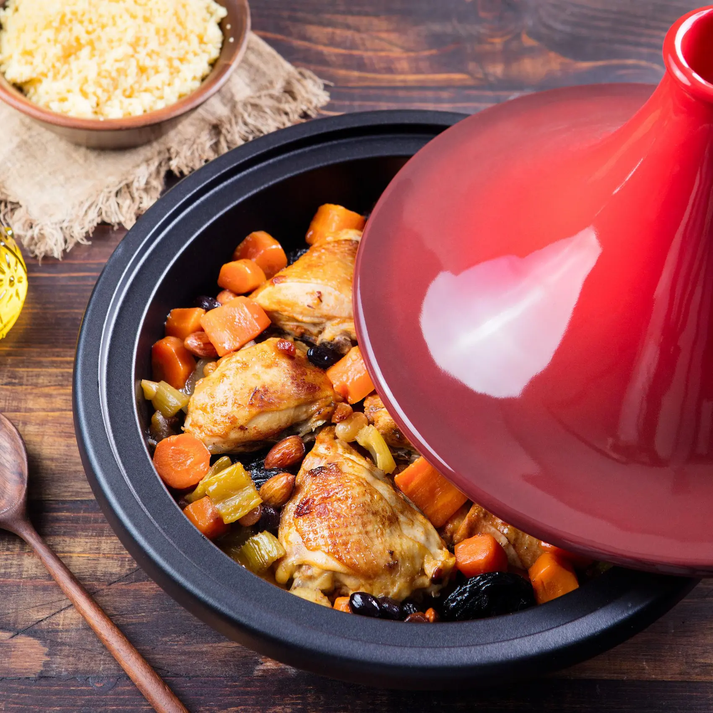
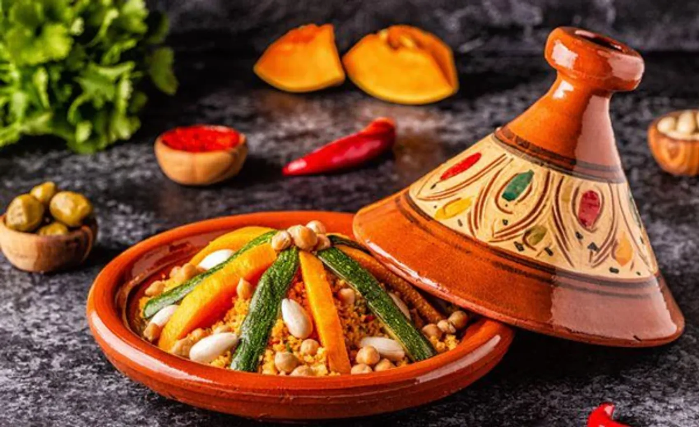
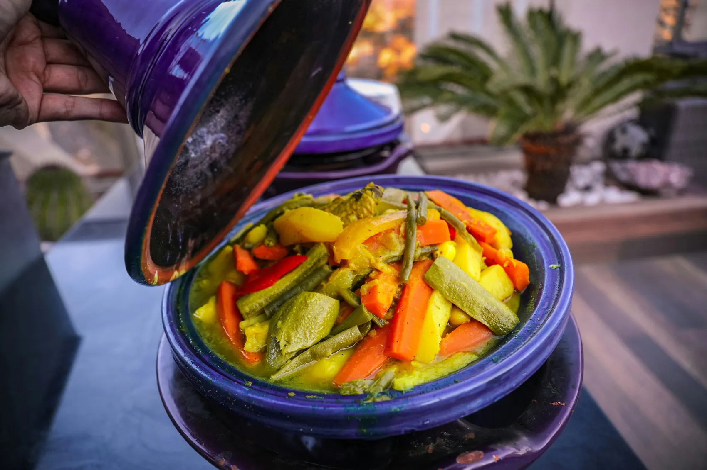
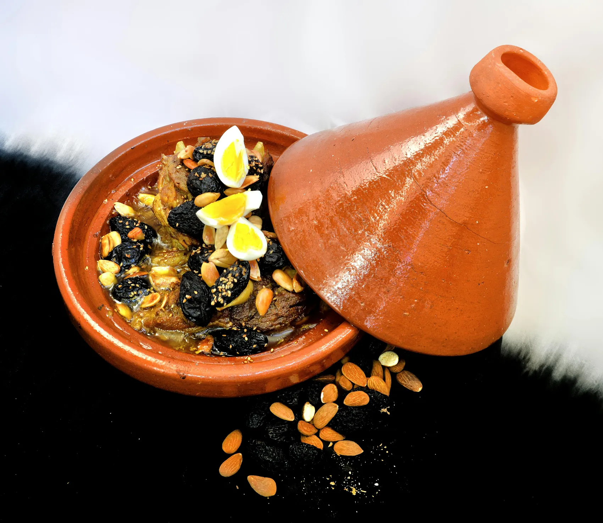

Especialidad tradicional
Tajín tradicional
Un plato emblemático de la cocina marroquí, cocinado lentamente con especias, verduras y carne para lograr un sabor intenso y lleno de tradición.
Ingredientes
- Carne y verduras
- Cúrcuma
- Jengibre
- Canela
- Comino
- Aceite de oliva
Tradición y origen
El tajín es uno de los platos más representativos de la gastronomía marroquí. Su nombre proviene del recipiente de barro en el que se cocina, diseñado para mantener el calor y concentrar todos los aromas.
Se elabora lentamente con ingredientes como pollo, cordero o verduras, combinados con especias como cúrcuma, jengibre, canela o comino.
Más allá de su preparación, el tajín también forma parte de la tradición familiar y de la cultura de compartir la comida en reuniones y celebraciones.
El tajín en imágenes



El tajín: historia y elaboración
Un recorrido por el origen, el significado cultural y la preparación de uno de los platos más emblemáticos de Marruecos.